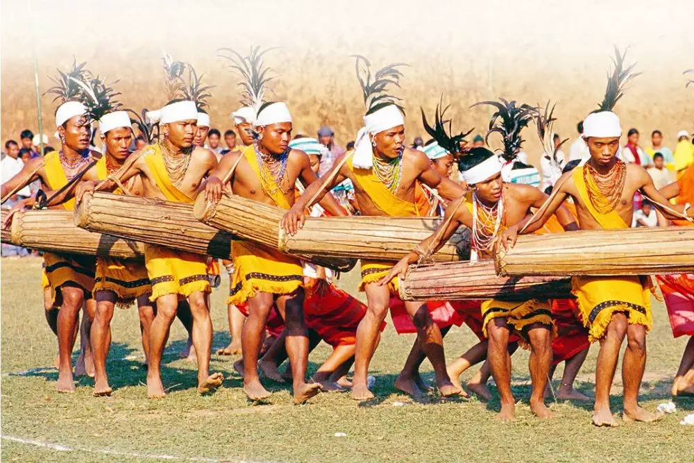

मेघालय

ये मेघालय के जंगल हैं।
मेघालय उपोष्णकटिबंधीय वन पूर्वोत्तर भारत का एक क्षेत्र है। इकोरगियन में 41,700 वर्ग किलोमीटर (16,100 वर्ग मील) का क्षेत्र शामिल है, और इसके नाम के बावजूद, न केवल मेघालय राज्य, बल्कि दक्षिणी असम के कुछ हिस्सों और दीमापुर के आसपास नागालैंड का एक छोटा सा हिस्सा शामिल है। इसमें उपोष्णकटिबंधीय वनों की तुलना में कई अन्य आवास भी शामिल हैं, लेकिन मेघालय में पाए जाने वाले मोंटेन उपोष्णकटिबंधीय वनों का एक महत्वपूर्ण बायोम है, और इस क्षेत्र में एक बार और अधिक व्यापक था, और इन कारणों से सबसे उपयुक्त नाम के रूप में चुना गया था।
ये मेघालय के पहाड़ हैं।

मेघालय का सबसे ऊंचा स्थान शिलांग पीक है, जो शिलांग शहर को देखने वाली खासी पहाड़ियों में एक प्रमुख IAF स्टेशन है। इसकी ऊंचाई 1961 मी है। पठार के पश्चिमी भाग में गारो हिल्स क्षेत्र लगभग समतल है। गारो हिल्स में उच्चतम बिंदु 1515 मीटर की ऊंचाई के साथ नोकरेक पीक है।

ये मेघालय के जनजातियां हैं।
मेघालय को तीन प्रमुख मातृसत्तात्मक समुदायों - गारो, खासी और जयंतिया के नाम पर स्वायत्त परिषदों में विभाजित किया गया है। अल्पसंख्यक जनजातियों में हाजोंग, कोच, राभा, बोरो और मान शामिल हैं।
भागों या पूरे चार पूर्वोत्तर राज्यों - असम, मेघालय, मिजोरम और त्रिपुरा - छठी अनुसूची के अंतर्गत आते हैं, जो “आदिवासी क्षेत्रों” के लिए विशेष प्रावधान करता है।
.jpg)
यह मेघालय का मानचित्र है।
.jpg)
मेघालय में ग्यारह 11 जिले हैं। ईस्ट गारो हिल्स - विलियमनगर
वेस्ट गारो हिल्स - तुरा
उत्तर गारो हिल्स - रेसुबेलपारा
दक्षिण गारो हिल्स - बाघमारा
दक्षिण पश्चिम गारो हिल्स - अमपति
ईस्ट जैंतिया हिल्स - खलहरीट
पश्चिम जयंतिया हिल्स - जोवाई
पूर्वी खासी हिल्स - शिलांग
दक्षिण पश्चिम खासी हिल्स - मावकीव्रत
पश्चिम खासी हिल्स - नोंगस्टोइन
री-भोई - नोंगपोह
परिचय
मेघालय, भारत का एक राज्य है, जो देश के पूर्वोत्तर भाग में स्थित है। यह भारतीय राज्य असम से उत्तर और उत्तर-पूर्व और बांग्लादेश से दक्षिण और दक्षिण-पश्चिम में घिरा है। राज्य की राजधानी शिलांग का पहाड़ी शहर है, जो पूर्व-मध्य मेघालय में स्थित है।
मेघालय एक अपलैंड क्षेत्र है जो डेक्कन पठार के एक अलग ब्लॉक द्वारा बनाया गया है। इसका शिखर 4,000 से 6,000 फीट (1,220 से 1,830 मीटर) तक की ऊंचाई में भिन्न होता है। पश्चिम में गारो हिल्स ब्रह्मपुत्र नदी घाटी से लगभग 1,000 फीट (300 मीटर) तक अचानक उठती हैं और फिर खासी हिल्स और जयंतिया हिल्स के साथ विलय हो जाती हैं, आस-पास के हाइलैंड सिस्टम जो पूर्व-ट्रेंडिंग की एक श्रृंखला द्वारा अलग किए गए टेबललैंड्स का एक एकल द्रव्यमान बनाते हैं लकीरें। पठार के दक्षिणी चेहरे, बांग्लादेश की तराई को देखते हुए, विशेष रूप से खड़ी है। कई नदियाँ और नदियाँ पठार से निकलती हैं, जिससे गहरी, संकरी, खड़ी-किनारे की घाटियाँ बनती हैं; सबसे महत्वपूर्ण उमियम-बारापानी है, जो असम और मेघालय राज्यों के लिए पनबिजली का प्रमुख स्रोत है।
मेघालय की जलवायु आम तौर पर हल्की है। अगस्त में शिलॉन्ग (खासी हिल्स में) का औसत तापमान 70 के दशक के एफ (लगभग 21-23 डिग्री सेल्सियस) पर है; यह जनवरी में ऊपरी 40s F (लगभग 8-10 ° C) तक गिर जाता है।
दुनिया के उपजाऊ क्षेत्रों में से एक मेघालय-चेरापूंजी में पाया जाता है, जिसमें मानसून के मौसम (मई से सितंबर तक) के दौरान औसतन लगभग 450 इंच (11,430 मिमी) वर्षा होती है। (चेरापूंजी में वर्षा अधिक हो सकती है, हालाँकि, इसके द्वारा, चेरापूंजी के पश्चिम में स्थित एक गाँव मावसिनराम, जहाँ प्रति वर्ष लगभग [०० इंच [१800, mm०० मिमी] वर्षा का योग दर्ज किया गया है।) शिलांग में वार्षिक वर्षा, लगभग ५० मील (केवल) चेरापूंजी से 80 किमी), लगभग 90 इंच (2,290 मिमी) है। सर्दियों के महीनों (दिसंबर से फरवरी) के दौरान, जलवायु अपेक्षाकृत शुष्क होती है।मेघालय को हरे-भरे जंगलों में कंबल दिया जाता है, और पाइंस, साल्स, और बांस बहुतायत से हैं। अन्य प्रजातियों में ओक, सन्टी, बीच और मैगनोलिया शामिल हैं। हाथी, बाघ, तेंदुआ, हिरण, जंगली सुअर, गौर (जंगली बाइसन), मितान (या समलैंगिक, गौर का पालतू रूप), भेड़ियों, सिनेमाघरों, बंदरों, वानरों, गिलहरियों, सांपों, खरगोशों, और सांभर हिरण सभी पाए जाते हैं राज्य में। मेघालय में पक्षियों में मोर, दलदल, कबूतर, हॉर्नबिल, जंगल फव्वारे, मैना, और तोते शामिल हैं।
मेघालय के अधिकांश निवासी मूल रूप से टिबेटो-बर्मन (ग्रास) या मोन-खमेर (खासी) हैं, और उनकी भाषा और बोलियाँ इन समूहों से संबंधित हैं। खासी भारत में एकमात्र लोग हैं जो मोन-खमेर भाषा बोलते हैं। खासी और गारो साथ में जयंतिया और अंग्रेजी राज्य की आधिकारिक भाषाएं हैं; राज्य में बोली जाने वाली अन्य भाषाओं में पर्ण-सिन्टेंग, नेपाली, और हैजोंग, साथ ही साथ बंगाली, असमिया और हिंदी की मैदानी भाषाएँ शामिल हैं।
ईसाई धर्म, हिंदू धर्म, और हिंदू धर्म के एनिमेटेड रूप क्षेत्र में प्रमुख धर्म हैं। मुसलमानों और यहां तक कि बौद्धों और सिखों के छोटे समूहों में भी अल्पसंख्यक हैं।
जनसंख्या मुख्य रूप से ग्रामीण है, और राज्य में कुछ शहर मौजूद हैं। शिलांग सबसे बड़ा शहर है; अन्य शहरी केंद्र, जनसंख्या के अवरोही क्रम में सूचीबद्ध हैं, जिनमें तुरा, मवलाई, नोंगथिममई और जुवाई शामिल हैं।
कृषि राज्य की प्रमुख आर्थिक गतिविधि है। मेघालय में उगाई जाने वाली मुख्य फसलें चावल, बाजरा, मक्का (मक्का), आलू, मिर्च, मिर्च, कपास, अदरक, जूट, सुपारी, फल (संतरे और आम सहित), और सब्जियाँ हैं। सांप्रदायिक भूमि का स्वामित्व आम है, लेकिन झूम (खेती में बदलाव) ने मिट्टी को नष्ट कर दिया है।
मेघालय में कोयला, चूना पत्थर, काओलिन, फेल्डस्पार, क्वार्ट्ज, माइका, जिप्सम, बॉक्साइट, और अन्य खनिजों सहित प्रचुर मात्रा में अप्रयुक्त प्राकृतिक संसाधन हैं। इसका सिलिमेनाइट डिपॉजिट (उच्च श्रेणी के सिरेमिक क्ले का एक स्रोत) दुनिया में सबसे अच्छा है और भारत के लगभग सभी सिलिमेनाइट उत्पादन के लिए जिम्मेदार है। राज्य में कई पनबिजली संयंत्रों के माध्यम से बिजली का उत्पादन किया जाता है; हालाँकि, ऐसे समय में जब बारिश कम होती है, बिजली आयात करनी चाहिए।
मेघालय में कोई भारी उद्योग नहीं है; छोटे पैमाने के उद्योगों में सीमेंट, प्लाईवुड और खाद्य पदार्थों का निर्माण शामिल है।आंतरिक संचार खराब हैं, और कई क्षेत्र अलग-थलग हैं। मेघालय में रेलवे नहीं हैं। एक राष्ट्रीय राजमार्ग उत्तर में गुवाहाटी (असम) से होकर दक्षिण में करीमगंज (असम) तक जाता है। शिलॉन्ग को उमरोई में शॉर्ट-हेल, कम क्षमता वाले मार्गों से निपटने वाली एक घरेलू एयरलाइन द्वारा सेवा दी जाती है, जो शिलांग से लगभग 18 मील (30 किमी) दूर है; और 2008 में राज्य के पश्चिमी भाग में तुरा में एक हवाई अड्डा खोला गया।
भारतीय संघ के अन्य राज्यों की तरह, मेघालय में एक राज्यपाल है, जिसे भारत के राष्ट्रपति द्वारा नियुक्त किया जाता है। एक मुख्यमंत्री की अध्यक्षता में एक मंत्रिपरिषद एक निर्वाचित विधान सभा (विधानसभा) से नियुक्त की जाती है। राज्य की न्यायपालिका का नेतृत्व शिलांग में उच्च न्यायालय करता है। राज्य में 11 प्रशासनिक जिले हैं।राज्य भारत में सबसे कम विकसित देशों में से एक है। लगभग तीन-पाँचवें लोग साक्षर हैं। हालाँकि, राज्य में उच्च शिक्षा के कई कॉलेज और संस्थान हैं, जिनमें उत्तर-पूर्वी हिल विश्वविद्यालय शिलांग भी शामिल है। उपमहाद्वीप के 1947 के विभाजन ने आदिवासी आबादी को बाधित किया; कुछ जनजातियों ने खुद को नए अंतर्राष्ट्रीय मोर्चे से विभाजित पाया, और इसके परिणामस्वरूप पूर्वी पाकिस्तान (अब बांग्लादेश) से भारत में जनजातीय पलायन हुआ।काशी हिल्स, भौतिक क्षेत्र, मध्य मेघालय राज्य, पूर्वोत्तर भारत। इस क्षेत्र में ज्यादातर पहाड़ी क्षेत्र शामिल हैं और इसमें शिलांग पठार शामिल है; यह ब्रह्मपुत्र और सुरमा नदियों की सहायक नदियों द्वारा सूखा जाता है। दक्षिण में चेरापूंजी स्कार्प दुनिया में सबसे अधिक औसत वार्षिक वर्षा है। खासी हिल्स क्षेत्र को कभी-कभी अपनी सुंदर सुंदरता के कारण "पूर्व का स्कॉटलैंड" कहा जाता है।मेघालय राज्य की राजधानी शिलांग के बाहर अधिकांश आबादी कृषि में लगी हुई है। सबसे बड़ी फसल गीली चावल है, जिसकी खेती घाटियों और पहाड़ी इलाकों में की जाती है। इस क्षेत्र के अन्य किसान खेती को स्थानांतरित करने, पेड़ों को जलाने और जमीन पर आगे बढ़ने से पहले एक या दो साल तक खेती करते हैं। सरकार ने इस बेकार तरीके को हतोत्साहित किया, पारंपरिक खेतों पर बसने के बजाय आग्रह किया। खासी लोगों की विशिष्ट संस्कृति में एक पारंपरिक मातृसत्तात्मक सामाजिक व्यवस्था शामिल है जिसे धार्मिक और आधुनिक कानूनी प्रभावों द्वारा बाहर संशोधित किया गया है। पहाड़ी लोगों में से कई ईसाई बन गए हैं।